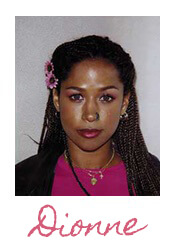
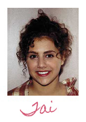
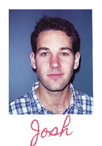
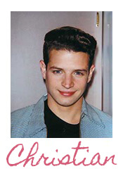
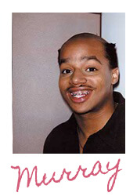
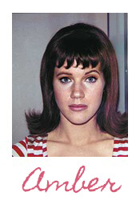
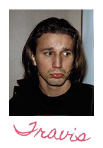

Cher is the main protagonist of the film. She is a teenager in high school studying and a self proclaimed normal teenage girl. She has a close relationship with her father and goes through many triumphs and losses throughout the course of the movie. Cher is played by Alicia Silverstone.

Dionne is Cher’s best friend. Through all of Cher’s shenanigans, “Dee” is always there being a supportive and fun friend. They are both “know what it's like to have people be jealous of us” and were both named after great singers of the past who now do infomercials. Dionne is played by Stacey Dash.

Tai is the new girl in school. Upon seeing her, Cher and Dionne take her under their wings and show her around the school, becoming fast friends. She is fun, slightly naive, and adventurous. Tai is played by Brittany Murphy.

Josh is Cher’s ex-step brother who goes to school out in the West Coast. Shown to be smart (reads Nietzsche by the pool and works with Cher’s father’s law firm) Josh can come off as standoffish, but he still retains a good relationship with Cher. Josh is played by Paul Rudd.

Christian appears later on in the film as another new student in school. When he is introduced, Cher sets her sights on him and tries to win his affection. The two become good friends and their relationship remains platonic throughout the film. Christian is played by Justin Walker.

Murray is Dionne’s boyfriend and a member of their friend group. Murray is shown to be funny and loud, seemingly everything that Cher dislikes about teenage boys. Still, he is good friends with the main cast. Murray is played by Donald Faison.
Elton is another member of their friend group. Cher tries to set Elton up with Tai, before failing when it is revealed that Elton harbours feelings for Cher. Elton is played by Jeremy Sisto.

Amber is a fellow classmate. The interactions between Amber and Cher are shown to be antagonistic and catty. Amber is played by Elisa Donovan.

Travis is initially introduced as a slacker in class and a stereotypical skater. Throughout the movie he develops and is shown to be kind and befriends Cher and Tai. Travis is played by Breckin Meyer.